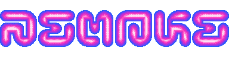
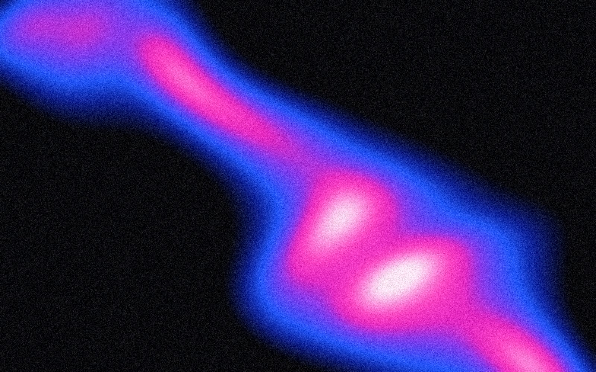
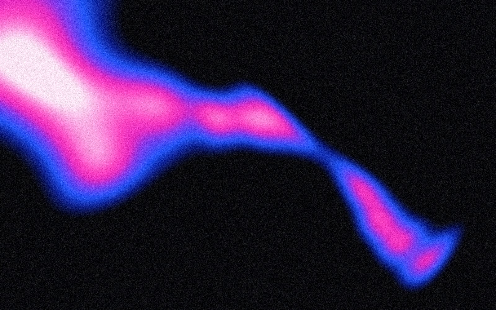
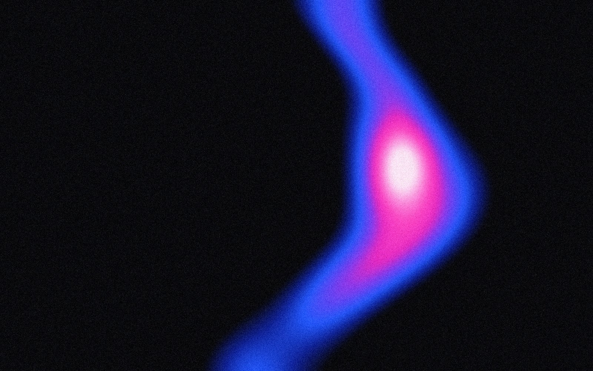
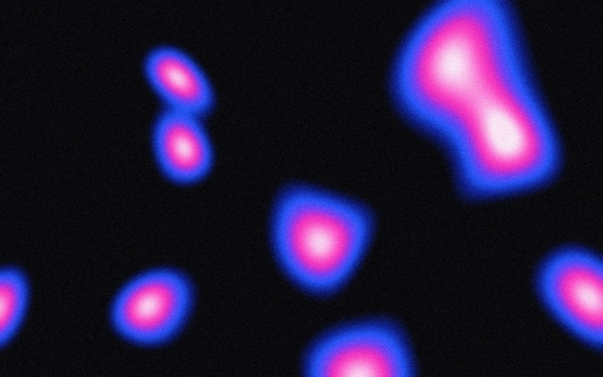
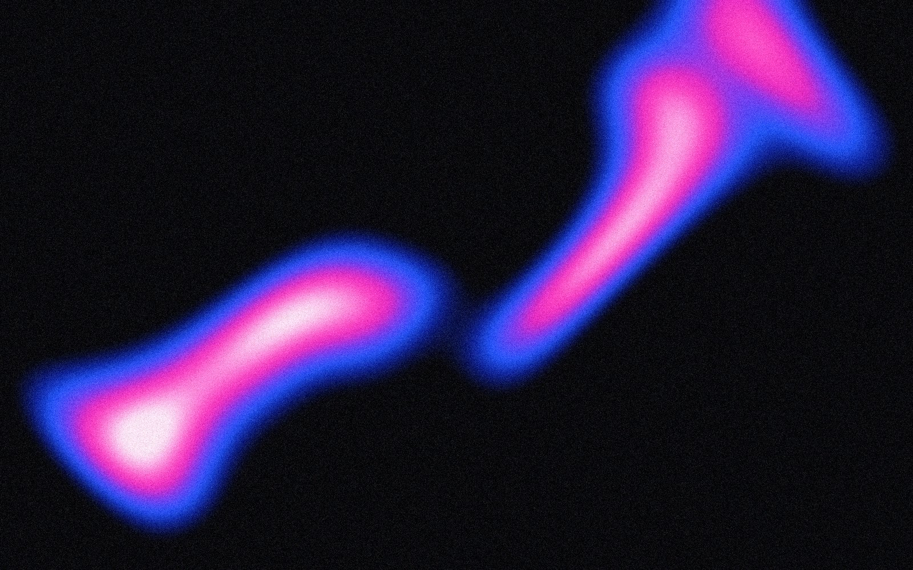
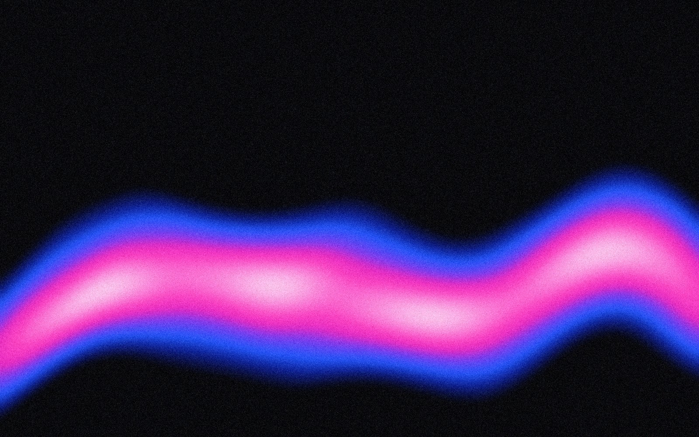
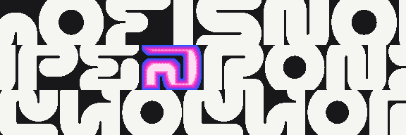

Keys and knobs MachineThree synths
Eight patterns ScreensThe display
Paper and night SourceGitHub
GPL-3.0 Support on Ko‑fi Play it

An ambient lofi machine for the M‑VAVE FM‑1.
Volume
Keys A S D F G H J K L ; ' play, W E R Y U O P [ the sharps, Z and X the octave
SynthsEach its own roll
3
Sample, pad, drone, pluck
PatternsA song, switched live
8
Hold Home, press a key
VoicesShared by the three
12
A chord machine on top
Your own recordings under every synth, worn by tape, codec and a room.








